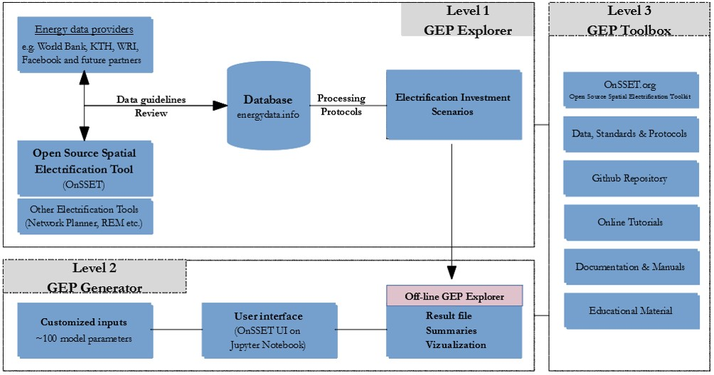

Overview¶
Scope¶
The GEP is an open portal for electrification investment data, analysis and research. It is being designed upon the principles of openness and transparency and aspires to enable reusability, replicability and reproducibility of embedded processes and data. Based on these principles, GEP output is available in three levels:
- Level 1 - The GEP “Explorer”: Up-to-date and openly accessible electrification investment outlooks
- Level 2 - The GEP “Scenario Generator”: Flexible, modular and open source software and modelling tools
- Level 3 - The GEP “Toolbox”: Open access and fully-fledged documentation and training material

In addition, the GEP ecosystem has been designed as such to support collaboration and interoperability between institutions, modellers and practitioners engaged in the field of energy access. This is achieved:
- By jointly developing data standards and processing protocols so that disparate practices, software and data can be aligned and streamlined.
- By means of modular configuration, through which different targets can be reached; Data, model and result customization and update is possible on the fly.
- By means of regular and community-inclusive annual updates through which new data, methods, and results can be absorbed as they emerge.
The GEP audience¶
The GEP aspires therefore to attract four primary target audiences:
- ‘High level decision makers’ will use output from the GEP “Explorer” that produces geo-infographic investment options for all target countries.
- ‘Policy and investment analysts’ will use the GEP “Scenario Generator” to develop tailored scenarios to meet specific policy or investment goals.
- ‘Data producers and ICT developers’ will use the GEP “Toolbox” and have a target into which additional information and methods can be utilized (with global impact).
- ‘Global development organizations’ will have a platform for country outreach. The software provides a springboard for tailored analysis and engagement from academia to project developers.